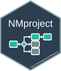

NMproject 
Script based ‘NONMEM’ model development in RStudio intended for intermediate to advanced R users.
- NONMEM code library
- End-to-end script based model development workflows
- Scale to groups of runs and complex workflows
- 100% flexibility through tracked manual edits to model files
- Customisable to multiple infrastructure types
Installation
You can install the released version of NMproject from CRAN with:
install.packages("NMproject")To install the latest version of NMproject from GitHub:
if(!require("devtools")) install.packages("devtools")
devtools::install_github("tsahota/NMproject")To install a specific release (e.g. v0.5.1) on GitHub use the following command:
devtools::install_github("tsahota/NMproject@v0.5.1")Load the package with
Code snippets
Use of pipes, %>%, make it easy to code sequences of operations to model objects.
Following snippet adds covariates to model object, m2:
- create a separate child control file
- add a covariate relationship to it (using PsN SCM syntax)
- run
m2WT <- m2 %>% child(run_id = "m2WT") %>%
add_cov(param = "CL", cov = "WT", state = "power") %>%
run_nm()Graphical RStudio ‘Addins’ exist for reviewing the changes that functions like add_cov() make before execution and performing nm_tran() checks.
For more complex operations use fully tracked manual edits.
Apply fully customisable diagnostic reports to one or multiple objects with nm_render() like so:
c(m1, m2) %>% nm_render("Scripts/basic_gof.Rmd")
## Saves html diagnostic reports in "Results" directoryThe template Scripts/basic_gof.Rmd can also be run as an R notebook for interactively customising to your specific model evaluation criteria.
Here’s a snippet for producing PPCs and VPCs:
- create a new (child) control stream
- updating initial estimates to final estimates
- convert it to a simulation control file
- run
- generate customised PPCs and VPCs from the outputs
m2s <- m2 %>% child(run_id = "m2s") %>%
update_parameters(m2) %>%
convert_to_simulation(subpr = 50) %>%
run_nm()
m2s %>% nm_render("Scripts/basic_vpc.Rmd")
m2s %>% nm_render("Scripts/basic_ppc.Rmd")Advanced functionality enables groups of runs to be handled with the same concise syntax (no loops). For example:
- create 5 child runs
- Randomly perturb the initial estimates of $THETA and $OMEGA
- run them all in their own subdirectory for tidiness.
m1rep <- m1 %>% child(run_id = 1:5) %>%
init_theta(init = rnorm(init, mean = init, sd = 0.3)) %>%
init_omega(init = runif(init, min = init/2, max = init*2)) %>%
run_in("Models/m1_perturb_inits") %>%
run_nm()See the website vignette for more examples